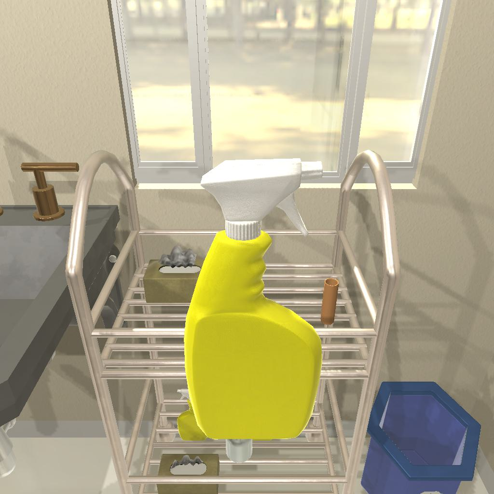
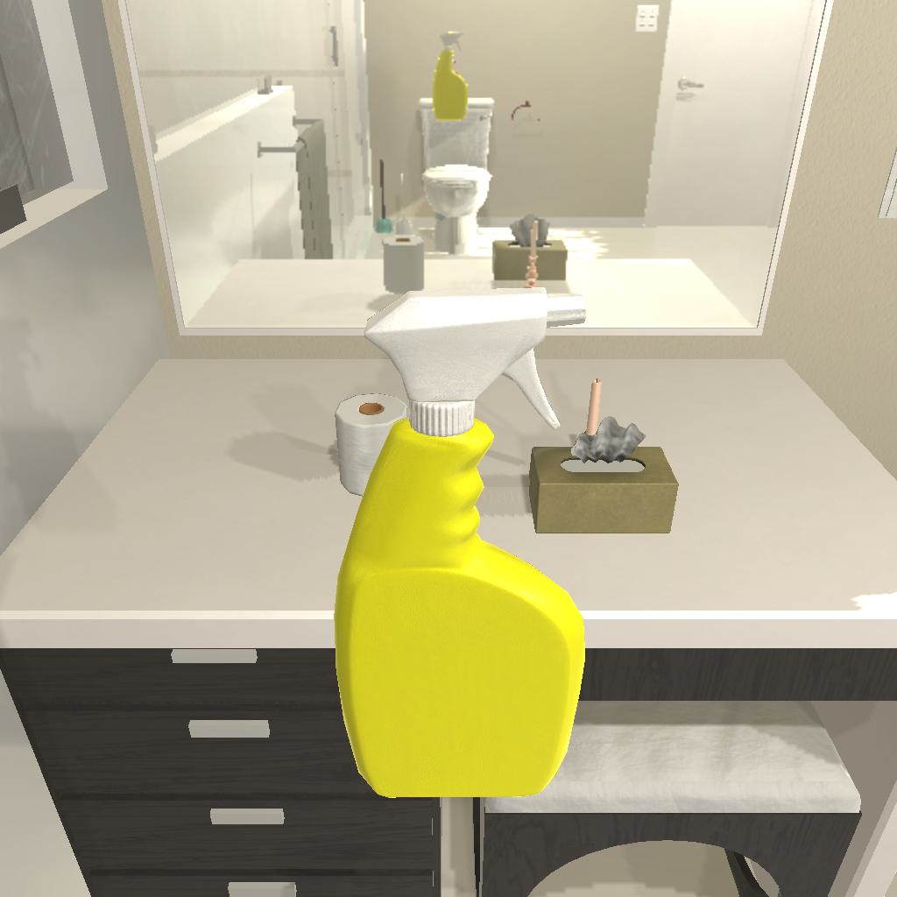

---------------------------------------------------------task: 28---------------------------------------------------------
--------------------------------------------------------------------------------------------------------------------------------------------------------------------
--------------------------------------------------------------------------------------------------------------------------------------------------------------------
Step:--------------------------------------------------------------------------8-------------------------------------------------------------------------------
----------------------------------------
VLM Prompt:
Image1:
Image2:
**Instruction**
1. Analyze the provided images to identify all visible household objects and compare the difference between images (e.h. whether the object is opened or not and taken on hand or not), focusing on those relevant to the task description "put two spraybottle in toilet."
2. Use the analysis of images and the task hint "The agent must find an object of the desired type, pick it up, find the correct location to place it, put it down there, then look for another object of the desired type, pick it up, return to previous location, and put it down there with the other object." to answer the question: what is the most reasonable action in the choices for the task description "put two spraybottle in toilet"?
3. Decide and write the answer using the template: The answer is: (i): , where i is the real number. If there is no desired object in images, search every place based on **Initial Observation** to find the object. And if no one is exactly correct, choose a similar answer.
**Initial Observation**
You are in the middle of a room. Looking quickly around you, you can see bathtub (1), bathtubbasin (1), cart (1), sink (1), garbagecan (1), sinkbasin (1), countertop (1), drawer (1-4), toilet (1), toiletpaperhanger (1)
**Answer Choices**
(1): go to bathtub 1
(2): go to bathtubbasin 1
(3): go to sink 1
(4): go to garbagecan 1
(5): go to sinkbasin 1
(6): go to drawer 1
(7): go to drawer 2
(8): go to drawer 3
(9): go to drawer 4
(10): go to toilet 1
(11): go to toiletpaperhanger 1
(12): put spraybottle 1 in/on countertop 1
(13): examine spraybottle 1
(14): examine countertop 1
**Answer**
Let's think step by step by following the instructions.
----------------------------------------
----------------------------------------
Original Response:
Image Analysis:
- In both images, we see a spray bottle that is being held. It is the same spray bottle in both images, indicated by its distinctive yellow color and white nozzle.
- In Image 1, the spray bottle is held over a sink with a countertop, a cart with items on it, and a window in the background.
- In Image 2, the spray bottle is held in front of a mirror reflecting the bathroom, showing a toilet, a countertop with various items, and a sink.
Comparing the two images, it is clear that the spray bottle is being moved or used within the same bathroom space.
Task Analysis:
The task description "put two spraybottles in toilet" implies that the agent needs to find two spray bottles and place them in or near the toilet. The task hint suggests that after finding and placing one spray bottle, the agent must find another spray bottle and place it next to the first one.
Based on the initial observation, the agent is already aware of the toilet's location. Since we can see one spray bottle in hand in the images, the next reasonable action would be to place this spray bottle near the toilet before looking for the second one.
The Answer is:
(10): go to toilet 1
After reaching the toilet, the agent should then put down the spray bottle they are holding near the toilet and look for a second spray bottle to complete the task. If the current spray bottle is the only one visible, the agent may need to search other areas such as drawers or the cart to find the second one.
----------------------------------------
----------------------------------------
>>> Refine Original VLM Response and Get Pure Action: No action
----------------------------------------
-----------------------------------------------------------------
Running time: 18.008657932281494 seconds
Total Money: 14.590280000000003
-----------------------------------------------------------------
-----------------------------------------------------------------
Text Observation:Nothing happens.
-----------------------------------------------------------------
UNSUCCEED